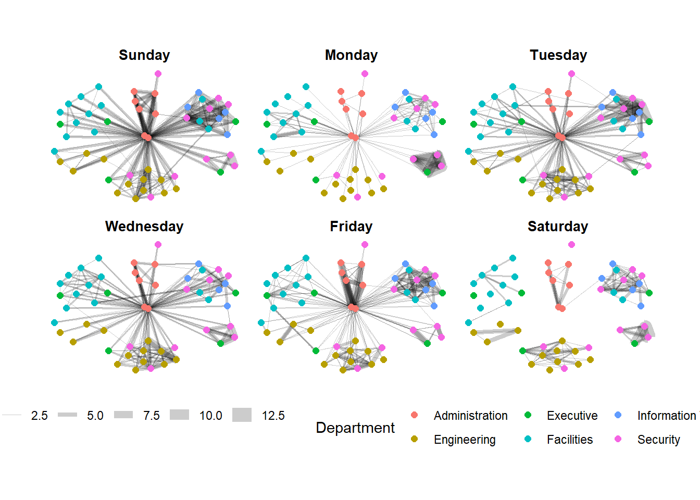

VAST Challenge 2024 Mini-Challenge 3
1. Overview
The Oceanus business ecosystem is dynamic in nature, marked by the continual emergence of startups, mergers, acquisitions, and investments. FishEye International serves as a vigilant overseer of this landscape, meticulously monitoring the activities of commercial fishing operators to uphold the integrity of the region’s marine ecosystem. Through comprehensive analysis of business records, FishEye endeavors to uncover ownership structures, shareholder dynamics, transactional histories, and the core offerings of each entity, culminating in the creation of CatchNet: the Oceanus Knowledge Graph, achieved through a blend of automated processes and manual review.
Recent events have cast a shadow over Oceanus’s commercial fishing sector, following the discovery of illegal fishing practices by SouthSeafood Express Corp. In response, FishEye has initiated an in-depth exploration to discern the temporal implications of this occurrence on Oceanus’s fishing marketplace. The competitive landscape may witness a variety of reactions, ranging from aggressive maneuvers by industry players seeking to capitalize on voids left by SouthSeafood Express Corp, to a heightened awareness within the industry that unlawful activities will be met with diligent scrutiny and consequential action. This ongoing investigation underscores the significance of FishEye’s role in maintaining the ethical and legal standards of Oceanus’s commercial endeavors.
2. Problem and Tasks
This is based on the tasks and question from VAST Challenge 2024 Mini Challenge 3 or MC3
A key element in stopping illegal fishing is holding the people who own nefarious companies accountable. Thus, FishEye is keenly interested in developing visualization tools that work with CatchNet to identify the people who hold influence over business networks. That is especially difficult with varied and changing shareholder and ownership relationships.
FishEye analysts want to better visualize changes in corporate structures over time. Create a visual analytics approach that analysts can use to highlight temporal patterns and changes in corporate structures. Examine the most active people and businesses using visual analytics.
Using your visualizations, find and display examples of typical and atypical business transactions (e.g., mergers, acquisitions, etc.). Can you infer the motivations behind changes in their activity?
Develop a visual approach to examine inferences. Infer how the influence of a company changes through time. Can you infer ownership or influence that a network may have?
Identify the network associated with SouthSeafood Express Corp and visualize how this network and competing businesses change as a result of their illegal fishing behavior. Which companies benefited from SouthSeafood Express Corp legal troubles? Are there other suspicious transactions that may be related to illegal fishing? Provide visual evidence for your conclusions.
3. Approach
The initial approach is to identify any abnormality in the data and perform the necessary data wrangling and cleaning, as well as some initial Data Exploration and Analysis. Afterward, we would move on to address each task in separation
Task 1:
For this task, we are planning to do some network graph of corporate network that would change overtime when new event happens. The main visualization techniques are still under further discussion, but the main purpose is to highlight temporal changes to corporate structure based on individual related to these corporate and potentially their familial relation. At the moment, the idea that we have in mind is to have a visualization that look like this with a slider for time representation

Task 2:
For this task, as we are looking at business transactions such as mergers or acquisitions, etc., we are planning to look at the edges which represent Beneficial Ownership or Shareholdership, and also look into the start_date and end_date to examine which business transactions are typical and atypical. At the moment, the idea is to visualize the type of event using the weight of the edges, e.g., Beneficial Ownership may have higher weightage than Shareholdership, and hence appear as a thicker line on the network graph.
Task 3:
For this task, we are planning to use centrality measures such as betweenness centrality and closeness centrality to measure the influence of a company. The higher the betweenness centrality of a company, the more important the company is in acting as a “bridge” to manage relationships and business transactions between other companies, which suggests that this company has high influence over others as it is highly crucial in facilitating flow of information and/or resources between other companies. Similarly, a company with high closeness centrality suggests that this company has high influence as they are close to many other companies and thus, able to efficiently communicate and spread information quickly.
At the moment, the idea is to have a visualization that looks like this, where the bigger the size of a node, the higher the betweenness/ closeness centrality of the company (i.e., the more influence a company has), with perhaps a slider to measure any changes in the influential companies over time.
Task 4:
For this task, we propose a comprehensive set of techniques aimed at identifying and analyzing the network associated with SouthSeafood Express Corp, visualizing network changes before and after illegal fishing behavior, reviewing revenue and market share changes, and detecting suspicious transactions related to illegal fishing activities.
First, to identify the network associated with SouthSeafood Express Corp, we will employ network graph dendrograms. These dendrograms will help us visualize the entities and relationships directly and indirectly connected to SouthSeafood Express Corp. By filtering the graph to include only relevant nodes and edges, we can highlight key nodes such as shareholders and partner companies, as well as critical edges like ownership and transaction relationships. The primary visualizations for this objective are network graphs, which will depict the entities connected to SouthSeafood Express Corp, and dendrograms, which will present a hierarchical tree structure of the connected entities.
Next, to visualize network changes before and after illegal fishing behavior, we will continue using network graph dendrograms. By creating dendrograms, we can visualize the hierarchical structure of company connections both before and after the incident. Hierarchical clustering will be used to group connected nodes and visualize their relationships. Nodes not connected to the main structure will be removed for clarity. Relevant visualizations for this objective include side-by-side dendrograms showing the network before and after the incident, and hierarchical cluster diagrams that illustrate the groupings of connected entities.
In reviewing revenue and market share changes before and after the incident, we will use revenue analysis and market share visualization techniques. For revenue analysis, bar charts will compare the revenue of companies before and after the incident, highlighting those that experienced significant changes. For market share analysis, pie charts will visualize market share changes among competitor’s post-incident, identifying companies that benefited from the incident. The relevant visualizations here are bar charts for revenue comparison and pie charts for market share distribution before and after the incident. To detect suspicious transactions related to illegal fishing, scatter plot analysis will be employed. Scatter plots will help us analyze transaction data and identify anomalies or spikes in revenue that could indicate suspicious transactions. By plotting revenue against time or other relevant variables, we can highlight unusual patterns or outliers. The visualizations for this objective include scatter plots to show revenue against time or other variables, box plots to identify outliers in revenue data, and histograms to analyze the distribution of revenue values and spot unusual concentrations.
By employing these techniques, analysts at FishEye can effectively visualize and understand the impact of SouthSeafood Express Corp’s illegal activities on the network and market share, as well as detect any related suspicious transactions. This comprehensive approach combines network analysis, revenue and market share comparisons, and anomaly detection to provide clear and actionable insights into the dynamics of the Oceanus commercial fishing business community.
4. Shiny App
Shiny App will tentatively come with interactive Graphs and Network Graph visualization. It will consist of several tabs, showcasing different graphs related to each of the tasks: